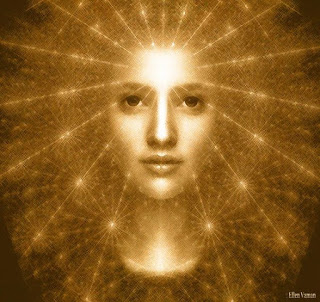

12 Елена, манускрипты в облаках, библиотека и огромный кот.
В моих снах меня познакомили с Еленой назвали её "учителем". Опишу те сны, которые мне лучше всего запомнились.
1) 2004-2005г. Я училась в старших классах.
Я подхожу к странному зданию. Вхожу в подъезд, захожу в лифт. В лифте меня встречает огромный кот в красной шинели и черных брюках, не имеющий ничего общего с булгаковским котом-Бегемотом. Он нажимает кнопку седьмого этажа, мы поднимаемся идём по коридору с желтыми развевающимися шторами. Поскольку я понимаю, что это - осознанный сон, я взлетаю и так мы следуем до конца коридора: я лечу, а кот меня сопровождает. Мы заходим в комнату, где удивительная женщина обучает других. Не помню точно, как она выглядела, но помню, что от нее шел свет. Кот назвал ее Учителем и представил мне ее как Елену. Я подошла к ней и начала задавать самые что не на есть дурацкие вопросы вроде таких: как устроен мир, в чем смысл жизни. На что она мне объяснила, что по пробуждению я все равно буду не в состоянии вспомнить ее ответы, поскольку память моя здесь работает иначе, нежели в состоянии бодрствования. Я тогда не поверила - мне казалось, что я воспринимаю все кристально ясно, яснее, чем обычно, и уж точно ничего не забуду. Поэтому я начала настаивать, чтобы она мне что-нибудь рассказала. И она в самом деле мне рассказала... и оказалась права. После пробуждения у меня остались лишь смутные фрагменты, которые потом совсем улетучились.
2) Несколько лет спустя.
Я иду среди облаков, меня ведет тот самый огромный кот в красной шинели. Мы подходим к столу в облаках, за которым сидит Елена. От нее струится свет. Вокруг нее лежит множество свитков, текстов. Я пытаюсь прочесть один, но ловлю себя на том, что не понимаю этого языка. И вместе с тем интуитивно чувствую, что мне все понятно. Я спрашиваю ее - что это? Она отвечает: это - моя книга. Однажды ты ее напишешь. Я удивленно спрашиваю: Почему же вы сами не напишете ее? Не помню точно, что она ответила, но смысл был такой: Потому что я нахожусь в другом мире. Но ты можешь ее прочитать и написать.
3) 2015 год. Осень.
Ночью у меня поднялась высокая температура.
Под утро я увидела очень необычный сон. В этом сне я видела свою комнату в точности такой же, какая она есть и мне снилось, что я лежала на своем диване в той позе, в которой я на самом деле на нем спала. Затем я медленно начинала подниматься над диваном. Не так, как я обычно летала в осознанных снах. Здесь я перемещалась как-то иначе - поднималась словно облако. Когда достигала потолка, резко опускалась к своему лежащему телу, затем вновь медленно поднималась. Такое качание продолжалось несколько раз, затем нечто меня всосало в потолок.
Я очутилась в белом коридоре, отовсюду лился свет.
Коридор казался бесконечным, в нем была тысяча дверей. И около каждой двери кто-то ждал.
Первой моей мыслью было встать в очередь и ждать с ожидающими.
Но я не знала, в которую из дверей мне нужно. Поэтому я спросила у какого-то местного сотрудника. Тогда мне указали на нужную дверь и сказали, что мне не нужно ждать.
Я вошла.
За дверью оказалась самая обычная библиотека, в которой люди раскладывали книги.
В этот момент прозвучал голос за кадром: ты видишь это место как библиотеку, потому что в твоем сознании и картине мира нет подходящего образа для этого информационного хранилища. Это место выходит за рамки того, что ты можешь вообразить. Если бы ты жила несколько веков назад, ты увидела бы это хранилище как александрийскую библиотеку, со свитками и пергаментами. Но поскольку тебе привычен образ современной библиотеки, ты видишь именно её.
Я подошла к библиотекарю и спросила:
- Как я могу увидеть Елену?
Я понимала, что это - осознанный сон.
На что получила удививший меня ответ:
- Почему тебя так давно не было? Елена давно тебя ждет.
Если быть точной, библиотекарь назвала Елену по имени и отчеству. Отчество я забыла по пробуждении. Вроде, созвучное "Павловна".
Тогда она сняла трубку и позвонила Елене, сказала мне подождать. Опять я получила ту же подсказку от голоса за кадром:
- Это средство связи. За неимением аналогий ты воспринимаешь его как телефон.
За это время я полистала книги на полках, но очень быстро забыла содержимое.
Я стала ждать, но внимание моего сна вскоре рассеялось, я так и не встретилась с Еленой.
Вместо этого я провалилась во тьму. В темноте я сидела за столиком с какой-то ужасной старухой. И эта старуха мне говорила страшные вещи про смерть и последующие или предыдущие воплощения, пугала меня будущим. Помню только, что я хотела заключить с ней соглашение и изменить будущее. Дальше мое внимание снова рассеялось.
До сна в библиотеке были и другие сны с Еленой. В одном из них была сцена прощания. Помню воздушные шары. Прощались со мной, или мы все куда-то уходили? Дул ветер перемен, звучала песня из фильма "Мэри Поппинс, до свидания". Тогда, на протяжении лет, я искала Елену в осознанных снах, но не находила. Лишь когда она сама желала, она появлялась в моих снах. За это время я освоила телепортацию и усовершенствовала другие приёмы, которые обучало меня существо из снов "М" в детстве. Мне удавалось телепортироваться в ряд мест, но не к Елене. Я летала в надежде найти то место, где, мне казалось, находится Елена. Я спрашивала у встречных людей, но никто мне не мог дать точные указания. Я летала в облака, даже в космос в поисках Елены, но нигде ее не было.
В то время, когда я практиковала полеты в облака, в какой-то момент наблюдала странную вещь: когда я довольно высоко взлетала над землей - земля начинала меня "отталкивать". Я не могла преземлиться - чем больше я старалась опуститься, чем больше меня подкидывало обратно вверх и я вынуждена была скитаться в облаках.
Когда я летела в космос - появлялся странный страх- не вернуться, никогда не найти свою планету.
Когда улетаешь с земли, возникает два страха. Первый - в самом начале - страх высоты. Естественный для человека. Потом вдруг переходишь какую-то грань, когда земля из чего-то огромного и необъятного становится лишь объектом, хоть и очень большим, но соизмеримым с тобой. Тебе уже не верится, как ты на нее помещался и страшно - вдруг второй раз ты уже на нее не поместишься, она не примет тебя. Так появляется второй страх - потерять связь с ней навсегда и остаться вечно блуждать в необъятном космосе. Помню, тогда у меня странная мысль промелькнула - на земле не страшно умереть - все равно ты сохранишь связь с землей. Страшно умереть в космосе, без связи и стать вечным скитальцем.
После десятков неудачных попыток найти Елену в осознанных снах, я оставила эту затею, а потом на несколько лет вообще прервала практику осознанных снов, поскольку она потеряла для меня всякий смысл. Я переключилась на другие практики.
Весной 2015 я сильно заболела, надо сказать, по своей вине, а летом уехала к хвойному лесу и попросила помощи у деревьев и духов леса. Сама не понимаю, как получила ответ - но что-то внутри меня мне ответило:
- На этот раз тебе помогут. Но это не значит, что тебе и впредь будут помогать, если ты будешь вести себя безответственно и опрометчиво.
И в самом деле, спустя два дня мне приснился сон, в котором я участвовала в битве и вместе с тем я была наблюдателем. Враг был сокрушен, но перед тем, как свалился в пропасть, оставил во мне какое-то зерно-занозу, которое я тогда не смогла вытащить. В этой битве я явно чувствовала чью-то поддержку. После этого дня все пошло на поправку.
